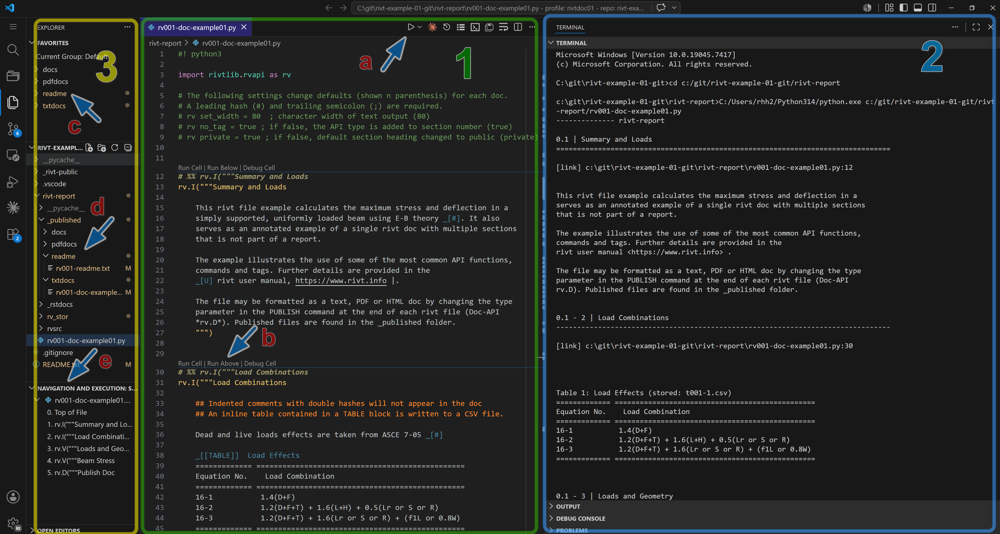

A.0 | Start#
[1] Getting Started#
This section covers installation of rivt and rivt doc examples. As open source software you are free to download and modify the program as needed (see FAQ). The open source software installation process is built around the collection and management of the multiple open source components. This section covers three ways to install rivt.
For users unfamiliar with Python and open source software the simplest way to get started is to download the Windows portable zip file (~800 MB). It includes everything necessary to run and explore rivt. For further details see here.
For users with a GitHub account rivt can be forked and run in a browser using Codespaces. Further details are here.
For users familiar with Python, rivt may be installed at the OS level or in an isolated environment using uv. Further details are here.
[2] rivt IDE#
rivt may be edited in a simple text processor and run from the command line but efficient editing and compiling is typically done in an IDE. Any IDE may be used but VSCode support is documented. A typical VSCode IDE layout editing a rivt file is shown below.
{kind=link}

rivt files and docs in VSCode (click on image to enlarge)#
A rivt file is a Python file (.py) that imports the rivtlib Python package and includes rivt markup. The rivt file is in the center editing panel[2], the doc outputs are in the right panel[3] and the file explorer is the far left panel [1]. Text, PDF and HTML output files are accessed in the file explorer and displayed within panels. Individual rivt sections (cells) can be run and output to an interactive terminal during doc development. Panel locations may be customized by the user. Additional example rivt files and docs are here.
[3] Portable rivt#
A rivt-portable installation is recommended for Windows users unfamiliar with Python. rivt-portable is a zip file that includes the basic rivt framework.
The zip file naming convention is:
win64-rivt-portable-n.n.n[an].zip
where n is a number representing the major, minor and patch release number. An an appended to the version is an alpha release where users should expect missing and incomplete features. The zip file contents must be unzipped into a directory with read-write access - typically the users home folder or a flash drive. After unzipping, VSCode and examples are started by clicking on the start-rivt.cmd file.
The primary features of rivt-portable are:
simplified, isolated installation
package and framework integration
installation needs to be updated as a whole, not as individual components.
integration with other programs may be more difficult.
Releases are updated monthly and may be downloaded from the GitHub repository.
[4] Codespace rivt#
VSCode is a customizable code editor that can be run locally or in the cloud. The cloud version of VSCode is referred to as a Codespace . A rivt Codespace is a VSCode cloud environment with rivt extensions for editing and running rivt files. It can be forked (copied) into a personal GitHub account. A rivt Codepsace can be forked from
by following the steps below. Example rivt files are included.
Fork a rivt Codespace
Set up a GitHub account if needed.
Go to the rivt Codespace repository
Click the Fork button in the upper right corner. This creates a copy of the repository in your GitHub account.
Switch to your GitHub account and naviate to the forked repository.
Click the green Code button.
Select the Codespaces tab.
Click the rivt-codespace-examples option.
- This creates a Codespace environment in your GitHub account
and opens the repository in the online VSCode IDE. The environment includes the rivt packages, extensions and examples.

[4] System rivt#
rivt may be installed into a system level Python.
A list of the installed dependencies is here.
rivt may also be installed and isolated environment using the uv package manager. The primary advantage of uv is the simplicity of insalling and updating packages while keeping them isolated from the system Python.
rivt-uv installation is recommended for users with some familiarity with Python and programming.